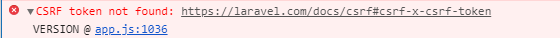

修改布局中的链接
现在登录成功的用户显示在页面信息看来和未登录没多大区别, 我们将对导航栏中的用户信息进行调整, 未登录状态显示登录按钮; 登录状态显示用户头像以及下拉栏
resources/views/layouts/_header.blade.php
<header class="navbar navbar-fixed-top navbar-inverse">
<div class="container">
<div class="col-md-offset-1 col-md-10">
<a href="/" id="logo">Sample App</a>
<nav>
<ul class="nav navbar-nav navbar-right">
@if (Auth::check())
<li><a href="#">用户列表</a></li>
<li class="dropdown">
<a href="#" class="dropdown-toggle" data-toggle="dropdown">
{{ Auth::user()->name }} <b class="caret"></b>
</a>
<ul class="dropdown-menu">
<li><a href="{{ route('users.show', Auth::user()->id) }}">个人中心</a></li>
<li><a href="#">编辑资料</a></li>
<li class="divider"></li>
<li>
<a id="logout" href="#">
<form action="{{ route('logout') }}" method="POST">
{{ csrf_field() }}
{{ method_field('DELETE') }}
<button class="btn btn-block btn-danger" type="submit" name="button">退出</button>
</form>
</a>
</li>
</ul>
</li>
@else
<li><a href="{{ route('help') }}">帮助</a></li>
<li><a href="{{ route('login') }}">登录</a></li>
@endif
</ul>
</nav>
</div>
</div>
</header>
本章我们将注意力放在退出登录上面:
<form action="{{ route('logout') }}" method="POST">
{{ csrf_field() }}
{{ method_field('DELETE') }}
<button class="btn btn-block btn-danger" type="submit" name="button">退出</button>
</form>
可以看到用户退出登录的按钮实际上是一个表单的提交按钮, 在点击退出按钮之后浏览器将向 /logout 地址发送一个 POST 请求, 但由于 RESTful 架构中会使用 DELETE请求来删除一个资源, 当用户退出时, 实际上相当于删除了用户登录会话的资源, 因此这里的退出操作需要使用 DELETE 请求来发送给服务器, 由于浏览器不支持发送 DELETE请求, 因此我们需要在这里使用一个隐藏域来伪造 DELETE 请求
在 Blade 模板中, 我们可以使用 method_field 方法来创建隐藏域
{{ method_filed('DELETE') }}
其解析后的 html 代码如下
<input type="hidden" name="_method" value="DELETE">
对退出按钮添加样式
resources/assets/sass/app.scss
/* header */
.
.
.
#logout {
cursor: default;
&:hover {
background-color: transparent;
}
}
/* footer */
.
.
.
集成 bootstrap 的 JS 库
如果我们现在进行登录, 则可以看到顶部导航连接已经加上, 但是当我们点击下拉框, 么有响应, 因为我们还没引入 js 文件
Laravel 5.5 默认在 resources/assets/js/bootstrap 文件中为我们配置好了 JQ 和 Bootstrap
我们只需要在 app.js 中对其进行加载即可
resources/assets/js/app.js
require('./bootstrap');
然后重启 watch-poll 命令进行编译, 文件将会编译到对应的 public 文件夹下面
现在我们呢需要在全局默认视图中引入编译后的 app.js 文件
resources/views/layouts/default.blade.php
<!DOCTYPE html>
<html>
<head>
<title>@yield('title', 'Sample App') - Laravel 入门教程</title>
<link rel="stylesheet" href="/css/app.css">
</head>
<body>
@include('layouts._header')
<div class="container">
<div class="col-md-offset-1 col-md-10">
@include('shared._messages')
@yield('content')
@include('layouts._footer')
</div>
</div>
<script src="/js/app.js"></script>
</body>
</html>
引入 js 文件, 可以正常工作
我们用 chrome 的开发工具 可以看到一个报错

这是因为 /resources/assets/js/bootstrap.js 文件中有以下代码
let token = document.head.querySelector('meta[name="csrf-token"]');
if (token) {
} else {
}
laravel 默认创建一个 js 变量, 此变量会从页面元标签中取 CSRF密钥, 取不到就会报错, 用不到我们把它删掉即可
注册后自动登录
现在的注册功能可以正常使用了, 但是我们希望在用户注册成功后能够自动登录, 这样的应用用户体验更棒, 在 laravel 中, 如果要让一个已认证通过的用户实例进行登录, 可以使用以下方法:
让我们接着对用户控制器的 store 方法进行更改, 让用户注册成功后自动登录
app/Http/Controllers/UsersController.php
<?php
namespace App\Http\Controllers;
use Illuminate\Http\Request;
use App\Http\Requests;
use App\Models\User;
use Auth;
class UsersController extends Controller
{
public function create()
{
return view('users.create');
}
public function show(User $user)
{
return view('users.show', compact('user'));
}
public function store(Request $request)
{
$this->validate($request, [
'name' => 'required|max:50',
'email' => 'required|email|unique:users|max:255',
'password' => 'required|confirmed|min:6'
]);
$user = User::create([
'name' => $request->name,
'email' => $request->email,
'password' => bcrypt($request->password),
]);
Auth::login($user);
session()->flash('success', '欢迎，您将在这里开启一段新的旅程~');
return redirect()->route('users.show', [$user]);
}
}